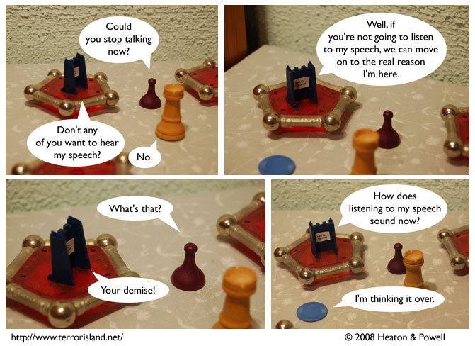

Strip #307
— Wednesday, May 28, 2008
Ned is standing on the table.
Notes, Thoughts, &c.
Ben’s Notes
The title text for this strip was almost “To ‘speech’ his own,” but Lewis screens my suggestions for quality.
Lewis’s Notes
You may recognize the joke in this strip as stolen borrowed from
comedian Jack Benny. I should also note that Ned’s strategy wouldn’t
work much better even if listening to the speech meant a guarantee of
his not plotting their demise.